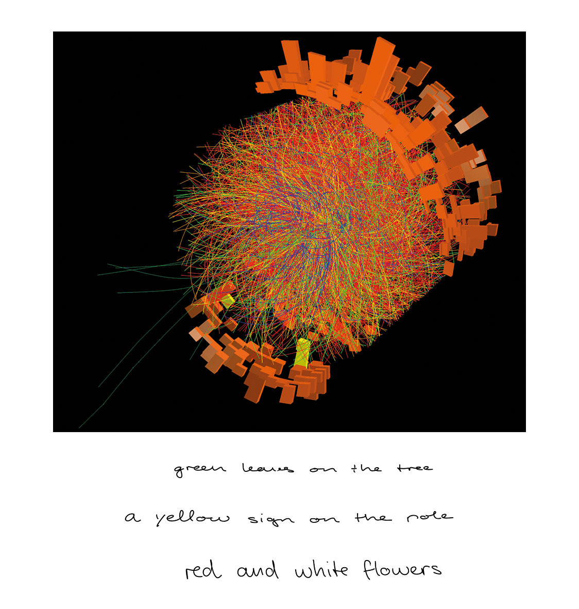
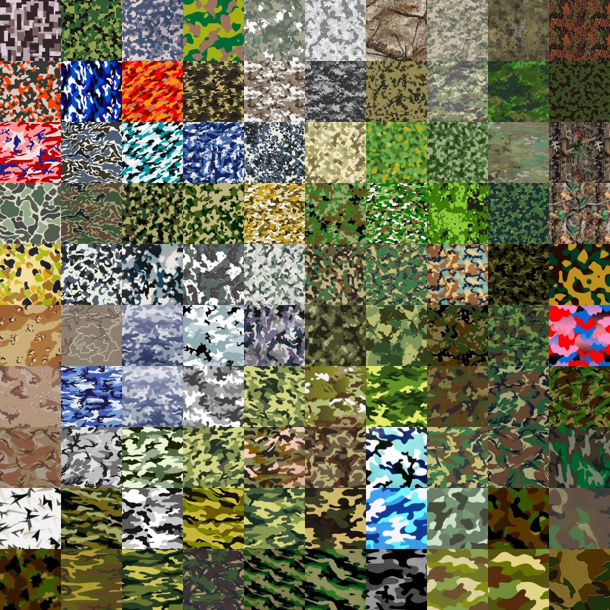
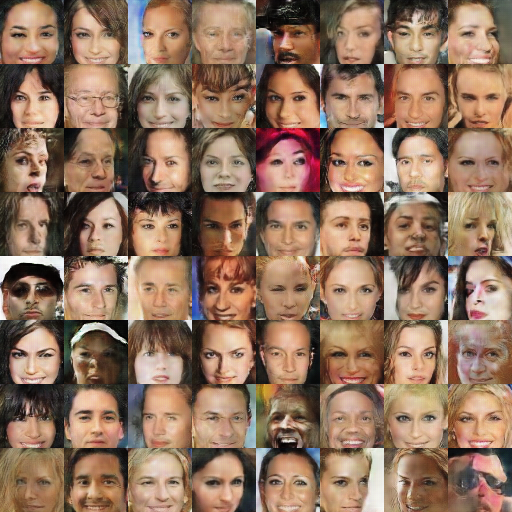
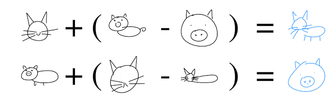

densecap: densecap + rnnlib handwriting haikus

neuraltalk: video-implementation
darknetYOLO:
styletransfer:
ofxTSNE:

DCGAN:(original version),DCGAN(tensorflow version)

PPGN:
pix2pix / CycleGAN: pix2pix web-implementation
sketchrnn

videogan
topics